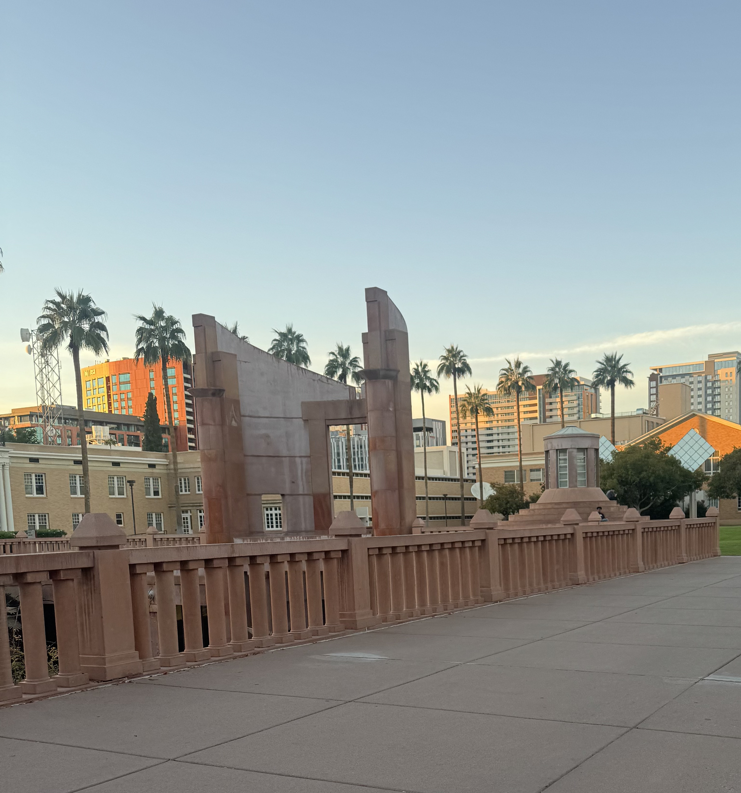

Decorative Concrete
Decorative concrete is used to add aesthetic appeal to any concrete surface, including floors, walls, and other areas. It can be stamped, stained, or poliched in order to create unique patterns and designs that help to enhance the overall appeal of any space. Decorative concrete can be either only decorative, or can also help to provide structural support, depending on the project requirements. At ASU, decorative concrete is used on many walkways and paths as well as in buildings to create exciting and visually appealing environments.

Hayden Library
The underground portion of Hayden Library uses dyed concrete to create a warm and enviting atmosphere for students, faculty, and visitors. The dye is mixed directly into the concrete before it is poured, ensuring a consistent color throughout the entire structure.
Social Sciences Building

This wall in the enterance to the Social Sciences Building is both decorative and structural. It uses concrete bricks placed in a pattern to create the design allowing for increased air-flow into the building as well as more sunlight for the plants inside.
Campus Walkways

Nearly all walkways on the ASU Tempe campus are lined by exposed-aggregate concrete. This type of concrete allows for increased traction but also provides visual appeal by allowing the walkways to blend in with the natural desert surrpoundings.
FAQ
- Does decorative concrete require special maintenance?
- Overall, decorative concrete does not require significantly more maintenance. Some types such as etched concrete can require resealing every 1-3 years.
- Why is decorative concrete popular on ASU's campus?
- Decorative concerete allows ASU to create visually sppealing environments with long-term durability and low-maitenance.
- Other Questions?
- Click here to fill out our questions form.